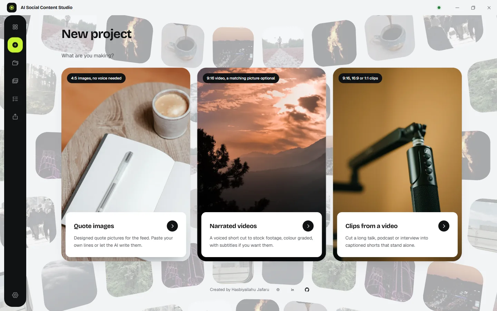
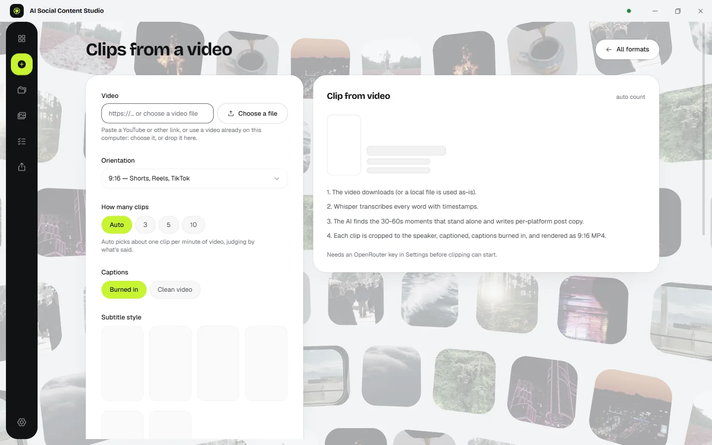
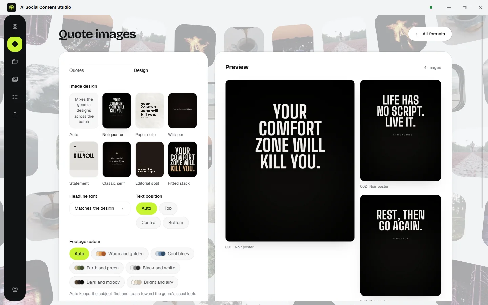
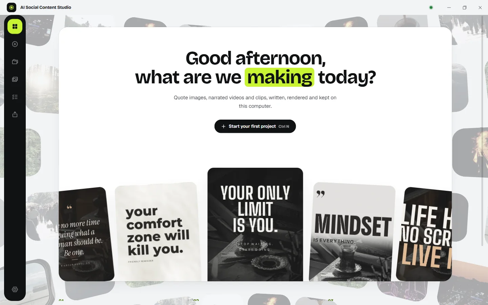

Clip any long video
Paste a YouTube link or drop in a file. It transcribes every word, finds the moments that stand alone and burns in captions.
Turn talks, podcasts and quick ideas into captioned shorts, quote images and narrated videos, right on your PC.
It listens to every word.
Paste a YouTube link or drop in a file. It transcribes every word, finds the moments that stand alone and burns in captions.
Seven designs with bundled fonts. Paste your own lines or let the AI write them.
A voiced short cut to stock footage, colour graded, with word-by-word subtitles.
Connect with one button, approve in your browser, then schedule finished clips straight from the app.
No account and no cloud. Your keys are encrypted by Windows and your files never leave your PC.




Your keys. Your files. Your computer. No account, no cloud storage.
Bring your own OpenRouter and Pexels keys and pay only for what you use, straight to them. The app itself is free.
A Windows 10 or 11 PC (64-bit) with about 1.2 GB of free space. An OpenRouter key powers the writing, transcription and voice; a free Pexels key finds the footage. The setup screens walk you through both.
Yes. There is no account or subscription. AI work runs on your own OpenRouter key, so you pay OpenRouter directly for what you use.
YouTube and many other video sites, or any video file already on your PC. If a site limits or blocks a download, the app tells you why in plain words.
For now, yes. The installer is not code-signed yet, so Windows SmartScreen asks first. Choose More info, then Run anyway.
It schedules through Metricool or Buffer once you connect them. Or export a folder with the files and per-platform captions and upload them yourself.